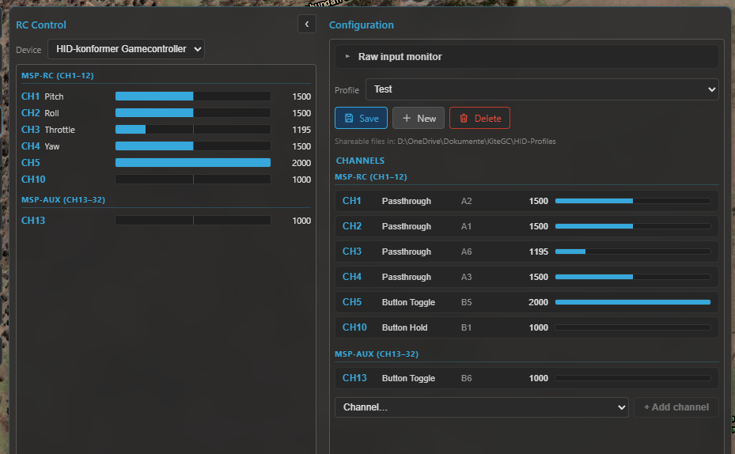

RC control¶
Kite can fly the aircraft from the ground station using a USB joystick, gamepad or RC transmitter (in USB / joystick mode): it reads your controller, maps the axes and buttons to RC channels, and streams them to the flight controller over the live link. This is a safety-critical feature — it's off until you explicitly take control, and it's deliberately gated behind a deadman so a frozen or disconnected GCS can never keep stale sticks flying.
This commands the aircraft
RC control sends real stick inputs to a real vehicle. Understand your FC's RC and failsafe configuration first, test on the bench, and keep a way to recover (a physical transmitter, or the FC's failsafe). Kite adds guards, but you are flying.
Open it from the RC tool on the navigation rail. It's available once you enable RC control in Settings, and is hidden on passive-telemetry links (there's no uplink to send on).
The big picture: three very different systems¶
How the GCS injects RC depends entirely on the flight stack — these are not the same mechanism:
| Stack | How it's sent | Channel model |
|---|---|---|
| INAV | MSP SET_RAW_RC (stick stream) + latched AUX_RC |
per-channel µs, up to 32 channels |
| ArduPilot | MAVLink RC_CHANNELS_OVERRIDE |
per-channel µs, 16 channels (Primary 1–8 / Secondary 9–16) |
| PX4 | MAVLink MANUAL_CONTROL |
4 normalised axes + aux + buttons (not per-channel) |
The controller-side half — reading your device, mapping, profiles, the engage gate — is identical for all three. Only the part that talks to the FC differs. Each stack's specifics are below.
Setting up your controller¶
The controller half works the same regardless of the stack:
- Device — pick your controller from the Device dropdown. Kite reads the raw device (all axes, buttons and hat switches), so HOTAS sticks, throttles and transmitters in joystick mode work, not just Xbox-style gamepads. A small centre deadband is applied so a resting stick can't leak a command.
- Raw input monitor — a collapsible view of every live axis / button / hat, so you can see what your controller reports.
- Platform — when offline, a Platform selector (INAV / ArduPilot / PX4) next to the Device lets you build a profile for a chosen stack. When connected, the platform is locked to the detected flight controller.

The RC panel: the device and live input monitor, the per-channel mapping, and the Take-control engage button.
Channel mapping¶
Each RC channel is driven by a method fed from your controller's inputs (axes A, buttons B, hat directions H). Use Learn to bind an input by just moving/pressing it. The methods:
| Method | Inputs | What it does |
|---|---|---|
| Axis Passthrough | 1 axis | direct stick → channel (invert, deadband) |
| Axis Analog Adjust | 1 axis | the axis sets a rate of change (e.g. throttle, gimbal) |
| Axis Dual Source | 2 axes | one adds, one subtracts (absolute or adjust) |
| Button Hold | 1 button | high while held, low released |
| Button Toggle | 1 button | cycle 2–6 positions (optional hold-to-toggle, anti-accidental) |
| Button Step | 2 buttons | discrete +/− steps |
| Button Adjust | 2 buttons | ramp +/− while held |
| Button Set | up to 6 buttons | each button latches the channel to its own fixed value |
Expo is left to the firmware. Each channel can have a display name shown in the live monitor.
Profiles¶
Mappings are saved as shareable profile files (in Documents/KiteGC/HID-Profiles/), not buried in
settings — Save, New and Delete from the profile dropdown. A profile is never auto-linked to a
device or FC; you pick the active profile yourself, so you stay in control of what's mapped.
Taking control (and the safety net)¶
Control is never automatic. Streaming starts only when you long-press "Take control" (hold until the button's bar fills) and stops on "Release control". Until then the panel just shows a mapping preview — nothing is sent.
Once engaged, control keeps running wherever you go in the app — the RC panel is only a configuration and start point, so you can switch to the map, or the Control tool to change flight modes, while your joystick still flies the aircraft. A red RC CONTROL ACTIVE indicator stays in the top bar (next to the arming light) as the reminder; click it to jump straight back to the panel and release. Only an explicit Release control, or a genuine loss of authority (see the deadman below), ever stops it.
- Deadman — the GCS continuously heartbeats the latest frame; if it stops (controller unplugged, UI frozen, link dropped, or you release control) Kite stops streaming immediately and never repeats the last sticks. The FC then does whatever its failsafe is configured to do.
- Seed on connect — when you engage, Kite seeds each button-driven and adjust channel from the FC's current values so they don't jump. Passthrough (direct-axis) channels are not seeded — a stick that isn't physically centred can still jump to its real position the moment you take control, so centre your sticks before engaging.
- Armed-disengage confirmation — releasing control while the vehicle is armed pops a confirmation, because handing flying back to an FC with no other receiver triggers its failsafe (RTL / land / disarm).
- Config locked while armed — while the vehicle is armed, the panel locks its configuration (channel mapping, profiles, input device and platform) down to the live monitor + take/release only, so you can't accidentally re-map a channel or switch profile mid-flight. Disarm to edit again.
- RC rate — the stick stream rate is selectable (10–25 Hz). On INAV, Kite runs a quick link-speed test a couple of seconds after you engage and warns if the link can't keep up at the chosen rate (suggesting a lower RC or telemetry rate). This test is INAV/MSP only — there's no equivalent check on the MAVLink (ArduPilot / PX4) path.
INAV (MSP)¶
INAV uses two MSP primitives:
SET_RAW_RC— the streamed stick frame (channels 1–16). It's fire-and-forget and fails safe: if the stream stops, the FC reverts to its RC / failsafe.AUX_RC— latched AUX switches (channels 17–32). A value set here persists on the FC until you change it; there's no failsafe under it, which is why Kite keeps critical switches off it.
Version differences (important)¶
| INAV version | What you get |
|---|---|
| Below 8.0 | No RC over MSP — Kite blocks it (older firmware always replies, wasting the downlink). |
| 8.0 – 9.0 | Stick streaming via SET_RAW_RC (channels 1–16). |
| 9.1 and up | Adds latched AUX via AUX_RC (channels 17–32) on top. |
Will the sticks actually take over?¶
Whether your GCS sticks (CH1–16) reach the aircraft depends on how the FC's receiver is set up. There are two situations:
A normal receiver is fitted (you also fly with a regular RC link). Your stick stream only takes over
while the FC's MSP RC OVERRIDE mode is active:
- Activate it with a switch on your transmitter, or by mapping it to an AUX channel you control from the GCS.
- While it's off, the panel shows "Override inactive — AUX only" and only your AUX channels (CH17+) do anything. While it's on, it shows "MSP RC OVERRIDE active — controlling CH1–16".
- On top of that, the FC keeps an override bitmask — a list of which channels MSP is even allowed to override. Kite compares it with your mapped channels and, if some wouldn't be overridden, offers a one-click Set override bitmask (applied at runtime only, not saved to the FC).
The receiver is set to MSP, with no other radio (a direct serial or internet link). There's no physical receiver to defer to, so the GCS is the receiver and takes over fully — no override switch needed.
In either case, AUX channels (CH17+) always work — latched AUX never collides with the stick
stream, so you can drive modes/switches from the GCS even when the sticks aren't engaged (this is also how
you'd map an AUX switch to turn MSP RC OVERRIDE itself on).
Don't share the stick channels with another MSP-RC system
INAV cannot tell who an MSP RC command comes from. If something else already feeds RC to the FC over MSP — for example an mLRS link running in MSP-RC mode — do not also drive the main channels (CH1–16) from Kite: the two streams collide and the FC can't separate them. In that setup, use AUX channels (CH17+) only from the GCS.
Kite also reads the FC's mode ranges and labels each AUX channel with the mode it drives (e.g. CH5 → ANGLE), and runs safety checks on the AUX channels you control: a critical mode (ARM / RTH / FAILSAFE) on a latching AUX channel is blocked (if the link dropped, a latched switch could leave you unable to disarm or recover), and autonomous GPS modes (CRUISE / WP / POSHOLD / ALTHOLD) raise a warning.
ArduPilot (MAVLink)¶
ArduPilot uses RC_CHANNELS_OVERRIDE — one message carrying channels 1–16, grouped in the panel
as Primary (CH1–8) and Secondary (CH9–16) (the two halves use different "release" encodings, which
Kite handles for you).
- No override-mode switch — overrides take effect as soon as you engage, so the manual Take-control gate is the primary guard here.
- FC-side deadman — ArduPilot's
RC_OVERRIDE_TIME(≈3 s by default) reverts to the real RX if the stream stops. Kite's own deadman is the front-line stop; the FC timeout is the backstop. - No forced release on disengage — when you release control Kite simply stops sending (rather than sending a "release" frame), leaving the FC a few-second window to re-engage before its failsafe fires.
SYSID_MYGCS— ArduPilot only accepts overrides from its configured GCS system ID; a mismatch silently drops them.- Flying with a physical receiver too? The real RX and the GCS override compete — if a servo only
twitches instead of holding, see RC control troubleshooting for
the ArduPilot settings (
RCx_OPTION46,RC_OPTIONS,RC_OVERRIDE_TIME) that let the GCS take over. - Modes and arming go through the Control tool (
DO_SET_MODE/ arm), not the override stream — though you can map a flight-mode channel if you prefer.
Don't share the channels with another MAVLink-RC system
ArduPilot cannot tell two RC_CHANNELS_OVERRIDE sources apart. If a radio already feeds RC to the
FC over MAVLink — for example a SIYI air unit in MAVLink-RC mode, with no separate serial receiver
— do not also drive those channels from Kite: the two override streams collide, and SYSID_MYGCS
filtering may silently drop one of them. Unlike INAV there is no separate AUX channel space on
ArduPilot (it's one CH1–16 override), so there's no clean "AUX-only" fallback — Kite RC control and
another MAVLink-RC system must not be used together on the main channels. Use Kite RC control only
when the other radio is idle / handed off, or set up a dedicated, non-conflicting configuration
first — consult the ArduPilot RC / MAVLink-override documentation and the
RC control troubleshooting page.
PX4 (MAVLink)¶
PX4 is fundamentally different: it uses MANUAL_CONTROL, which is not per-channel PWM but
four normalised axes (roll, pitch, throttle, yaw) plus up to 6 aux axes and 32 buttons. Kite
gives PX4 its own manual-control editor rather than the channel grid.
- Throttle is centred — stick centre = mid throttle (PX4 maps it [−1, 1] → [0, 1] for both multirotor and fixed-wing).
- Buttons are sent as a bitfield; PX4 maps each button to an action per vehicle (in PX4 / QGC), so there's nothing button-related to configure on the Kite side.
COM_RC_IN_MODEmust allow a MAVLink/joystick source (not "RC only") or PX4 ignores the input — Kite shows a reminder.- Modes and arming stay on the Control tool.
PX4 support is newer
The PX4 manual-control path is more recent and less field-tested than the INAV and ArduPilot paths. Verify behaviour carefully (bench first) before relying on it.
Where to go next¶
- Command modes, arm/disarm and guided flight: Vehicle control (ArduPilot / PX4).
- Set up the link first: Connecting.